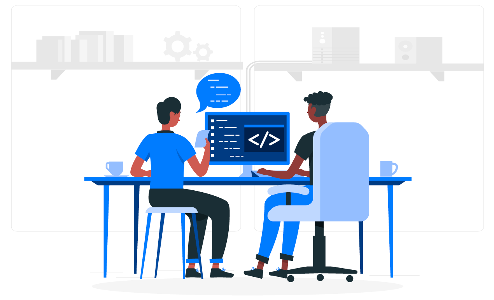

1. Taking yourself and your career seriously. In life, you have to make difficult decisions sometimes, which will not always be good initially. However, remember that this profession has a certain seriousness, so be respectful of yourself and your skills.
2. Having your rules. Imagine that someone at work tells you to write code fast and sloppy, so that it is done for tomorrow. How will you react to such a situation? Someone at work may make you work overtime. What will you do then? Would you stand up knowing you could lose your job? What principles do you live and work for.
2. Taking responsibility. There is a responsibility behind all of this. Your decisions won't always be pleasant, but that's life. There is always fear, but sometimes you have to look straight into the beast's eyes and face it.
3. You are steady and stable. You don't break your rules and you stick to them hard. Under the influence of emotions, you do not change your mind. Every day you try to be a professional in your work.
4. Admitting your mistakes. Everyone can do something wrong; you also don't run away from it and hide under the rug. You won't always know everything, but as a professional, you'll always find the answer.
5. You focus on getting your job done the best you can. You are your product and service. When you do something right, people want you.
6. You say what you know, not what others want to hear. After all, you are the professional. Your opinion may be painful and unpleasant, but you are not adjusting your responses to other people's expectations.
Here is a collection of qualities a professional should have. But how to get these qualities. After all, you will not become responsible from day to day.
As a developer, you have to face many challenges. Not only technical challenges, but also ethical and political ones. Being a programmer isn't just about writing code. It is also your decisions, behaviours, and rules.
There is a limit that should not be exceeded. The same goes for your code. You are the professional and you are responsible for your decisions, no one else. However, if you are responsible, at least you make the decision, not someone else.
Sometimes you have to say NO at a great cost. However, your rules will always point you in the right direction because you are you. No one else is you and will not be. This is what you need to feel good about yourself, but not the other person.
Remember, we don't live in a perfect world. Sometimes you will have to make a list of options and define which of those options is the least disastrous. However, this is correct behaviour. A less professional person will panic and choose nothing.
